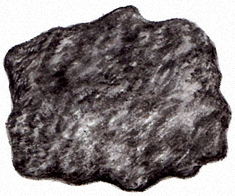

The Formation of Iron Ore Deposits
A look at Iron Ore Deposits in The Lehigh Valley

Developed and Produced by
The Delaware & Lehigh National Heritage Corridor
Written And Illustrated By
Lance Leonhardt
e-book Publishing software provided by Killer Interactive, LLC.
Iron is a natural resource that has been used by civilizations around the world since 3000 BC when it began to replace bronze as the metal of choice for warfare implements.
Pure iron results from the burning – or smelting – of iron ore in large furnaces heated to more than 2000 degrees Fahrenheit. The liquid iron that’s tapped from the furnaces cools and hardens into a hard metal that can be reheated and reshaped into frying pans, stoves, bridge girders or weapons.
Nature blessed eastern Pennsylvania with an abundance of iron ore. By the 1840s, blast furnaces in towns such as Catasauqua, Allentown, Bethlehem and Glendon were producing hundreds of tons of pig iron that were made into parts for ships, buildings, bridges, wagons, cannons, homes, and early railroads.
The Lehigh Valley became one of the world’s leading producers of iron by the late 19th century. After that, iron became an important ingredient in the production of steel and the evolution of the Bethlehem Iron Company into the Bethlehem Steel Company.
Iron Ore Deposits
Magnetite is a black-colored mineral which, as its name suggests, has magnetic properties. Magnetite was the main component in the first iron ores that were used in the iron industry that began in Durham, Bucks County in the early 1700s. Another form of iron oxide, the mineral hematite, also was mined at Durham.
Bethlehem Steel Works, a watercolor by Joseph Pennell, depicting Bethlehem Iron Company in May 1881
Iron ore found in our area was used in the production of iron and steel in the Lehigh Valley and Bucks County as early as the mid-1700s. Local iron ore played a key role in the development of the Industrial Revolution in the United States.
Iron ore deposits generally were formed in two different ways, and at different times. The first way involved volcanic liquids containing iron, produced during a collision of continents around one billion years ago that made portions of North America, including rocks now found on hilltops in southeastern Pennsylvania.
As the continents collided, a tremendous amount of heat was generated far beneath the Earth's surface, melting some of the deeper, solid rock of the Earth's crust into liquid rock called magma. The magma was forced upward, rising into sections of solid rock closer to the Earth’s surface.
Hot water in the magma, which contained iron, moved outward into cracks in the surrounding solid rock. As the magma and water cooled, the iron joined with oxygen to make a solid iron oxide mineral called magnetite. The magnetite collected in large quantities and formed iron ore deposits.
Magnetite is a black-colored mineral which, as its name suggests, has magnetic properties. Magnetite was the main component in the first iron ores that were used in the iron industry that began in Durham, Bucks County in the early 1700s. Another form of iron oxide, the mineral hematite, also was mined at Durham.
Iron Ore Deposits
Iron ore found in our area was used in the production of iron and steel in the Lehigh Valley and Bucks County as early as the mid-1700s. Local iron ore played a key role in the development of the Industrial Revolution in the United States.
Rainwater
Limestone
Groundwater
The second way that iron ore deposits formed involved the weathering, or breaking down, of limestone and a metamorphic rock called quartzite. The weathering of these rocks – also called erosion – was done by water.
As these rocks folded and fractured during mountain building that took place over several hundred million years, rainwater trickled downward through cracks in the rock and collected as groundwater.
Movement of ground water
Iron particles from rock entering & collecting in groundwater
As the groundwater moved slowly underground, it picked up iron particles and deposited them into eroded and fractured openings in the rock.
Limonite iron ore deposits in limestone rock openings
Water and oxygen reacted with the iron particles to form a type of iron ore called limonite, which, along with clay from the weathered rock, collected and filled openings in the rock and became iron ore deposits.
Over time, as overlying surface rock was eroded away, the limonite ore deposits became exposed at or near the Earth’s surface.
Limonite iron ore
Limonite is a yellowish-brown iron ore and was the most important source of iron for the iron and steel industry in the Lehigh Valley during the 1800s and early 1900s.
The abundance of anthracite coal from the northern portion of our area helped fuel the blast furnaces used in the production of iron and steel during this time.
Iron Ore Deposits: Limonite Formation
The second way that iron ore deposits formed involved the weathering, or breaking down, of limestone and a metamorphic rock called quartzite. The weathering of these rocks – also called erosion – was done by water.
- Magnetite & Hematite ore Deposits
- Limonite ore Deposits
- Anthracite Coal Deposits
- Slate Deposits
- Surface Carbonate Rock Deposits
(Limestone and/or Dolomite) - Limestone mined for cement
(manufacture & cement plants) - Geography
- Water
- Counties
(Limestone and/or Dolomite)
(manufacture & cement plants)
Magnetite ore deposits occur in the hills of southern Lehigh and Northampton counties and the northeastern corner of Bucks County. These deposits were mined into the late 1800s.
Limonite ore occurs mostly in the valley sections of limestone rock in Lehigh and Northampton counties, and in quartzite rock along hill slopes in Saucon Valley and South Mountain in southern Lehigh and Northampton counties.
Interactive Map
Magnetite ore deposits occur in the hills of southern Lehigh and Northampton counties and the northeastern corner of Bucks County. These deposits were mined into the late 1800s.
-
Glossary
Glossary
-
CC
Lesson Text
Standards
Pennsylvania Academic Standards
My Map
- Magnetite & Hematite ore Deposits
- Limonite ore Deposits
- Anthracite Coal Deposits
- Slate Deposits
- Surface Carbonate Rock Deposits
(Limestone and/or Dolomite) - Limestone mined for cement
(manufacture & cement plants) - Geography
- Water
- Counties
- Cities
Magnetite & Hematite ore DepositsLimonite ore DepositsAnthracite Coal DepositsSlate DepositsSurface Carbonate Rock Deposits
(Limestone and/or Dolomite)Limestone mined for cement
(manufacture & cement plants)GeographyWaterCountiesCounty NamesCity Names